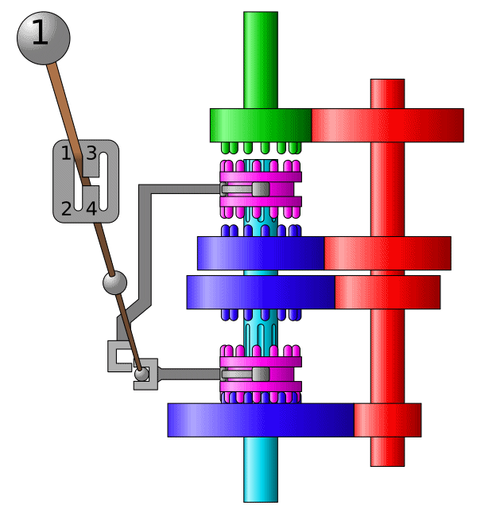
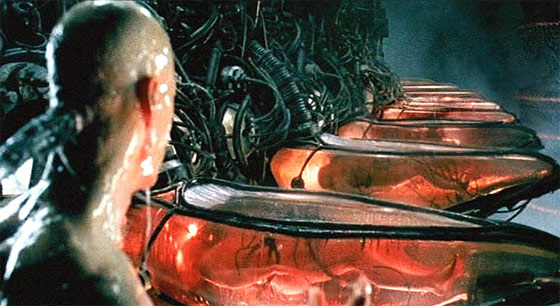

同步 (Synchronization)

两个或两个以上随时间变化的量在变化过程中保持一定的相对关系
- 同步电路 (一个时钟控制所有触发器)
- iPhone/iCloud 同步 (手机 vs 电脑 vs 云端)
- 变速箱同步器 (合并快慢速齿轮)
- 同步电机 (转子与磁场转速一致)
- 同步电路 (所有触发器在边沿同时触发)
异步 (Asynchronous) = 不需要同步
- 上述很多例子都有异步版本 (异步电机、异步电路、异步线程)
并发程序中的同步
并发程序的步调很难保持 “完全一致”
- 线程同步：
在某个时间点共同达到互相已知的状态
再次把线程想象成我们自己

- NPY：等我洗个头就出门/等我打完这局游戏就来
- 舍友：等我修好这个 bug 就吃饭
- 导师：等我出差回来就讨论这个课题
- jyy:
等我成为卷王就躺平- “先到先等”，
在条件达成的瞬间再次恢复并行 - 同时开始出去玩/吃饭/讨论
- “先到先等”，
生产者-消费者问题：学废你就赢了
99% 的实际并发问题都可以用生产者-消费者解决 。
void Tproduce() { while (1) printf("("); }
void Tconsume() { while (1) printf(")"); }
在 printf 前后增加代码，使得打印的括号序列满足
- 一定是某个合法括号序列的前缀
- 括号嵌套的深度不超过 $n$
- $n=3$,
((())())(((合法 - $n=3$,
(((()))),(()))不合法
- $n=3$,
- 生产者-消费者问题中的同步
- Tproduce: 等到有空位时才能打印左括号
- Tconsume: 等到有多余的左括号时才能打印右括号
计算图、调度器和生产者-消费者问题
为什么叫 “生产者-消费者” 而不是 “括号问题”？
- 左括号：生产资源 (任务)、放入队列
- 右括号：从队列取出资源 (任务) 执行
并行计算基础：计算图
- 计算任务构成有向无环图
- $(u, v) \in E$ 表示 $v$ 要用到前 $u$ 的值
- 只要调度器 (生产者) 分配任务效率够高，算法就能并行
- 生产者把任务放入队列中
- 消费者 (workers) 从队列中取出任务
生产者-消费者：实现
能否用互斥锁实现括号问题？
- 左括号：嵌套深度 (队列) 不足 $n$ 时才能打印
- 右括号：嵌套深度 (队列) $>1$ 时才能打印
当然是等到满足条件时再打印了 (代码演示)用互斥锁保持条件成立

并发：小心！
- 压力测试 + 观察输出结果
- 自动观察输出结果：pc-check.py
- 未来：copilot 观察输出结果，并给出修复建议
- 更远的未来：
我们都不需要不存在了